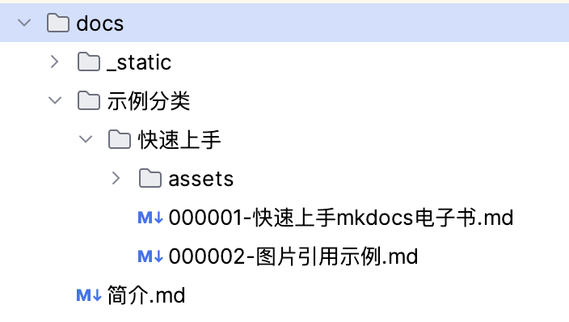
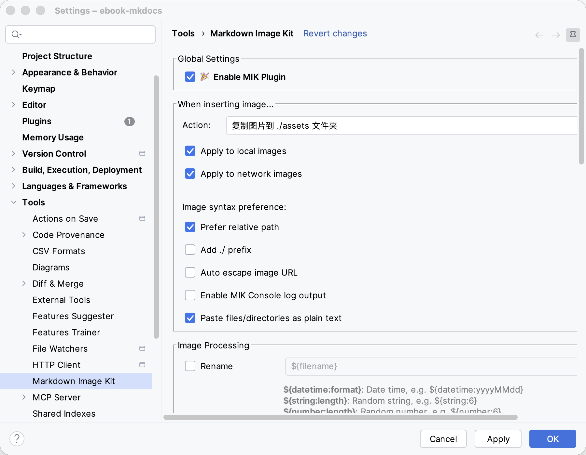
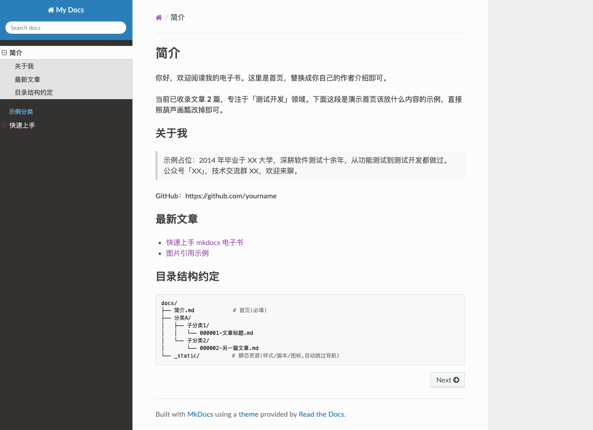
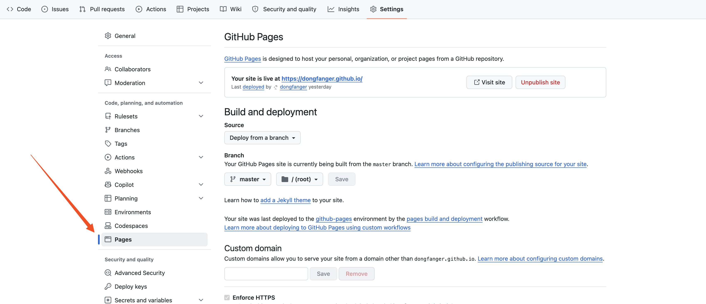
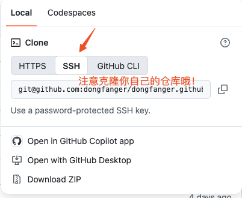

本书作者：测试开发刚哥，文章版权归个人所有，未经授权请勿转载。
电子书网站由 AI 实现，Claude Code+DeepSeek-V4-Pro。技术栈 Python+MkDocs，主题 Read the Docs，静态托管 GitHub Pages。具有中文搜索功能。
源码
https://github.com/dongfanger/ebook-mkdocs
配置
├── docs/ # 内容目录(mkdocs 默认,按分类/子分类组织)
│ ├── 简介.md # 首页
│ └── _static/ # 静态资源(extra.css / lunr.zh.js / favicon.ico)
├── scripts/
│ ├── gen_nav.py # 扫描 docs 生成 mkdocs.yml
│ └── post_build.py # 构建后 hook(中文搜索 + favicon)
├── serve.py # 本地预览入口
├── deploy.py # 部署入口
└── requirements.txt
网站配置文件是scripts/gen_nav.py。 MkDocs 原生配置文件其实是mkdocs.yml，但为了生成导航，mkdocs.yml 由 gen_nav.py 动态创建，所以在 gen_nav.py 配置。
完整代码：https://github.com/dongfanger/ebook-mkdocs/blob/main/scripts/gen_nav.py
代码片段说明：
ROOT = Path(__file__).resolve().parent.parent # 项目根目录
SRC = ROOT / "docs"
# 不参与导航的内容目录
SKIP_DIRS = {"_static", "_images", "assets", ".git", "__pycache__"}
# 一级目录顺序(留空 = 按目录名自动扫描排序;想固定顺序就填,如 ["分类A", "分类B"])
TOP_ORDER = []
# 各一级目录下的二级目录顺序(留空 = 自动扫描;如 {"分类A": ["子分类1", "子分类2"]})
SUB_ORDER = {}
...
def build_nav():
lines = ["nav:"]
# 首页: 优先 简介.md,回退 index.md(兼容旧命名)
home = "简介.md" if (SRC / "简介.md").exists() else "index.md"
lines.append(f" - 简介: {home}")
# 根目录下其余 .md(如 关于本书.md)作为顶层导航项,按文件名排序
for md in sorted(SRC.glob("*.md")):
if md.name == home:
continue
lines.append(f" - {md.stem}: {md.name}")
# 一级目录按硬编码顺序,兜底补上未列到的目录
for top in list_subdirs(SRC, TOP_ORDER):
top_path = SRC / top
lines.append(f" - {top}:")
for sub in list_subdirs(top_path, SUB_ORDER.get(top, [])):
lines.append(f" - {sub}:")
emit_md_lines(lines, top_path / sub, indent=" ")
return "\n".join(lines)
HEADER = """site_name: My Docs
site_description: 基于 mkdocs 的技术电子书
theme:
name: readthedocs
plugins:
- search:
lang: zh
markdown_extensions:
- admonition
- codehilite
- attr_list
# 扁平 URL(/xxx.html 而非 /xxx/)
use_directory_urls: false
# 自定义样式:blockquote 引用块(主题默认无样式)
extra_css:
- _static/css/extra.css
# 中文搜索:构建后用纯 JS 分词器覆盖默认 lunr.zh.js(修复 nodejieba 依赖导致的搜索失效)
hooks:
- scripts/post_build.py
"""
...
Markdown 读取目录，默认为 docs：
SRC = ROOT / "docs"
一级目录，可为空，配置后指定顺序：
# 一级目录顺序(留空 = 按目录名自动扫描排序;想固定顺序就填,如 ["分类A", "分类B"])
TOP_ORDER = []
二级目录，可为空，配置后指定顺序：
# 各一级目录下的二级目录顺序(留空 = 自动扫描;如 {"分类A": ["子分类1", "子分类2"]})
SUB_ORDER = {}
首页默认简介.md，可自定义：
# 首页: 优先 简介.md,回退 index.md(兼容旧命名)
home = "简介.md" if (SRC / "简介.md").exists() else "index.md"
lines.append(f" - 简介: {home}")
网站信息和主题：
HEADER = """site_name: My Docs
site_description: 基于 mkdocs 的技术电子书
theme:
name: readthedocs
更多主题
MkDocs 预置主题：https://www.mkdocs.org/user-guide/choosing-your-theme/
自定义主题：https://www.mkdocs.org/user-guide/customizing-your-theme/
还有其他更多配置可在gen_nav.py的 HEADER 里添加：
- locale: zh_CN（中文本地化）
- navigation_depth（导航深度）
- sticky_navigation（侧边栏跟随滚动）
文章

文章用 Markdown 编写，保存到 docs 目录，文件名建议以六位数字加短横线如000001-开头，保证顺序。
推荐使用 PyCharm 配合 Markdown Image Kit 插件管理图片资源，复制图片粘贴到 md 中，自动转存为assets/相对路径：

预览
执行 serve.py：
INFO - Building documentation...
INFO - Cleaning site directory
INFO - Building documentation to directory: /var/folders/xs/g_0461kx28n2xk7whfkrsnw00000gp/T/mkdocs_38bvc8cg
INFO - Documentation built in 0.10 seconds
INFO - [13:10:59] Watching paths for changes: 'docs', 'mkdocs.yml'
INFO - [13:10:59] Serving on http://127.0.0.1:8000/
访问http://127.0.0.1:8000/效果如下：

发布
GitHub 新建仓库，以github.io作为后缀，并设置 GitHub Pages：

克隆yourname.github.io到本地，建议选择 SSH。

和 ebook-mkdocs 平级：
├── ebook-mkdocs
├── yourname.github.io
修改deploy.py的目录：
# ⚠️ 改成你自己的 GitHub Pages 仓库名(与本项目平级,已 clone 且配好推送)
TARGET = ROOT.parent / "yourname.github.io"
执行deploy.py，它会生成 site 静态文件夹，复制到yourname.github.io推送 GitHub 仓库。
访问https://yourname.github.io，即可在线查看电子书。搭建电子书网站全程免费。
搜索
MkDocs 默认使用 Lunr.js 做搜索，但 Lunr 不支持中文分词。AI 解决了这个问题：在docs/_static/目录下放入lunr.zh.js（中文分词插件），然后在构建钩子post_build.py中将其注入到搜索配置中，这样搜索就能支持中文了。
结语
到这里，从零搭建一个免费电子书网站的全流程就介绍完了。回顾下核心步骤：
- 克隆源码：拿到项目模版，安装依赖
- 编写文章：用 Markdown 写内容，按规范命名保证顺序
- 本地预览：
serve.py一键启动预览 - 发布上线：
deploy.py一键推送到 Github Pages
核心思路是：用脚本自动化配置文件生成，让你专注内容创作。MkDocs 负责静态站点生成，Github Pages 负责免费托管。整套源码由 AI 辅助生成，也解决了中文搜索等问题。
如果你在实践过程中遇到问题，或者想交流搭建心得，欢迎加入技术群或私信联系我。也欢迎给 GitHub 仓库点个 Star，你的支持是我持续创作的动力。